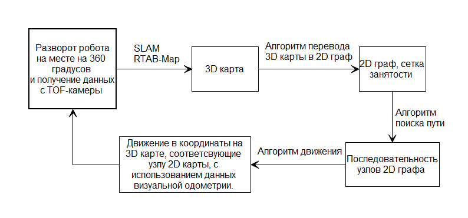
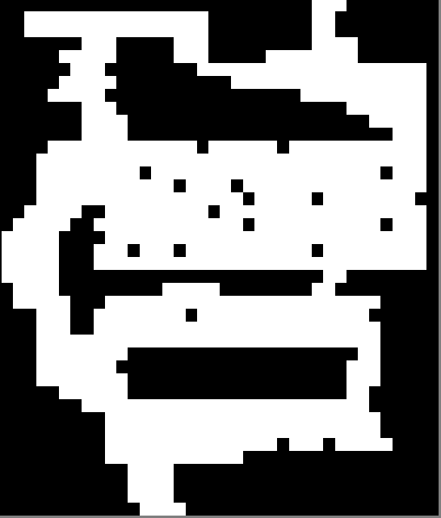

3 Алгоритмы навигации робота
В начальный момент времени робот находится в исходной точке и не имеет в памяти данных об окружающей неизвестной среде.
Задача навигации робота состоит из двух этапов:
- составление 3D карты окружающей неизвестной среды;
- автономное перемещение в произвольно заданную точку на полностью построенной карте.
Для осуществления навигации робота необходимо реализовать следующую последовательность действий, приведенных на рисунке 12.

Рисунок 12 – Последовательность действий для осуществления навигации робота
Сначала формируется карта зоны непосредственно вокруг робота, путем разворота робота на месте на 360 градусов. При этом внешняя среда дискретизируется, и каждому участку 3D карты, ставится в соответствие, узел 2D графа. Граф представляет собой сетчатую карту занятости и позволяет реализовать алгоритм поиска пути. Узлы графа могут иметь три значения:
- неизвестная территория;
- свободный участок;
- препятствие.
Построение 3D карты и 2D графа происходит одновременно с исследованием неизвестной среды.
На следующем шаге алгоритм поиска пути в глубину определяет узел 2D графа, в который ему следует переместиться, чтобы исследовать неизвестную среду. После чего робот перемещается в координаты на 3D карте, соответствующие этому узлу 2D графа. Далее робот циклически выполняет заданную последовательность действий, пока не останется неизвестных зон на 2D графе, имеющих общее ребро с узлом 2D графа, отмеченного как свободный участок.
3.1 SLAM алгоритм RTAB-Map
Задача SLAM решается c помощью реализации RTAB-Map.
Rtab-Map сшивает облако точек, поступающее с Kinect 2.0 , в 3D карту.
Это достигается за счет использования детектора и дескриптора ключевых
точек, а также детектора замыкания петель. Принцип работы детектора
замыкания петель представлен на рисунке 8.
Также RTAB-Map определяет местоположение робота на 3D карте.
Рисунок 13 – Схема работы детектора замыкания петель RTAB-Map
3.2 Алгоритм перевода 3D карты в 2D граф
Для перевода 3D карты в 2D граф, необходимо спроецировать облако
точек, составляющее 3D карту, на плоскость, проходящую на уровне
расположения камеры перпендикулярно оси Z 3D карты.
Все объекты находящиеся ниже плоскости, считаются свободным участком.
Объекты, пересекающие плоскость и находящиеся выше неё считаются
препятствием.
Шаг сетки графа, генерируемого RTAB-Map равен 0.05 м.
3.3 Алгоритм высокого уровня выбора цели на карте
Для примера рассмотрим случай, когда робот занимает на графе 4 клетки (см. рисунок 14)
Радиус обзора равен 10 клеткам.
В действительности, робот занимает 144 клетки. А радиус обзора составляет 72 клетки.

Рисунок 14 - Алгоритм в процессе работы

Рисунок 15 - Карта занятости полученная в результате работы алгоритма

3.4 Алгоритм поиска пути
Алгоритм поиска пути используется как на этапе составление 3D карты
окружающей неизвестной среды, так и на этапе автономного перемещения
в заданную точку на построенной карте.
Алгоритм поиска пути в ширину
На выходе получаем последовательность точек (узлов 2D графа) .
Рисунок 11 – 2D граф построенной карты
Рисунок 12 – Блок-схема работы алгоритма поиска пути в глубину
3.6 Алгоритм планирования траектории движения робота
Задачу планирования пути можно свести к задаче планирования 2D пути.
Предложенный алгоритм планирования пути содержит в себе систему хранения
и воспроизведения 2D карты помещения, построенных
Рисунок 13 – Блок-схема алгоритма планирования траектории движения
робота
3.7 Алгоритм формирования команд на движение робототехнической платформы